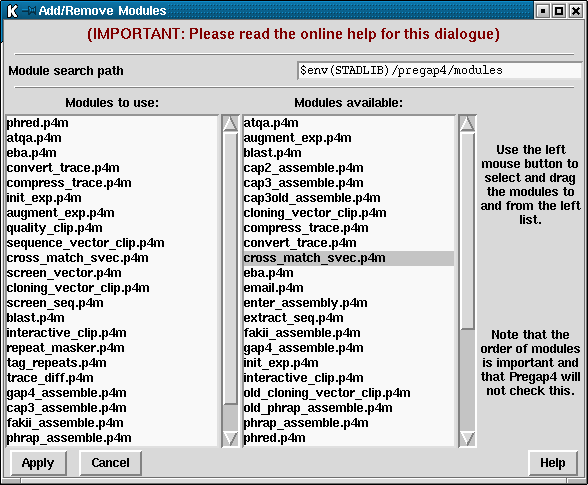

This section details how to select newly written modules in Pregap4, or how to change the order of existing modules.
It is for system managers and advanced users only.
Pregap4 has a default set of modules to use. Any module within this list may
be enabled or disabled. If you only need to screen a set of experiment files
using blast or screen_seq it may be tempting to use the
Add/Remove Modules screen (from Modules menu) to remove everything else. This
is not necessary; just disable the unwanted modules. The real purpose of
Add/Remove Modules is to define the contents and order of the list that
appears in the Configure Modules screen. This may be required if you create
your own modules, or if you wish to never use certain modules. (Removing them
from the list instead of simply disabling them will speed up starting
Pregap4.)
It is possible for a module to be used more than once. For example if you wish to use blast to screen against several databases then this control may be used to add two "Blast screen" items to the Configure Modules screen. Note though, that this is not applicable to many modules. For example it is not possible to screen against multiple vectors by simply using multiple Sequencing Vector Clip modules (rather this should be done using a file of vector-primer information). No error checking is performed with the Add/Remove Modules screen.
A pregap4 module is a specific piece of Tcl/Tk code that interfaces between
pregap4 (by providing a run procedure and an optional GUI for
configuration) and an external program to do the main work (as Tcl itself is
generally too slow for anything except the most simple of operations). The
exact specification of a module can be found elsewhere
(section Writing New Modules).

All modules must end in `.p4m'. Pregap4 uses a module search path to
search for files with this suffix. The module search path is a space separated
list. By default it will be set to $STADENROOT/lib/pregap4/modules. It
may be adjusted temporarily within the program, or permanently by setting the
MODULE_PATH variable within your `.pregap4rc' or run-specific
configuration files. For example:
set MODULE_PATH "$env(STADLIB)/pregap4/modules ."
The two lists shown in the dialogue represent the current modules to use (on the left) and the total list of known modules. Modules may be added to the left (to use) list by clicking any mouse button on the right hand list, dragging the mouse cursor to a location within the left list, and then release the mouse button. To remove a module from the 'to use' list simply drag and drop from left to right. This mechanism also allows for changing the order of modules within the left list.
The order of modules is vitally important and in the current version of Pregap4 the validity of the order is not checked. Common sense should prevent most problems. For instance it is pointless to assemble and enter into gap4 before vector clipping. The best source of information on the possible orderings comes from the documentation for each individual module. Some modules are directly incompatible with each other as they perform the same or mutually exclusive tasks. For example it is only possible to use one of the assembly methods.
Once the modules have been selected press "Apply" to reinitialise Pregap4. If you wish to make your newly selected list the default for subsequent Pregap4 runs use the "Save Module List" command in the Modules menu.